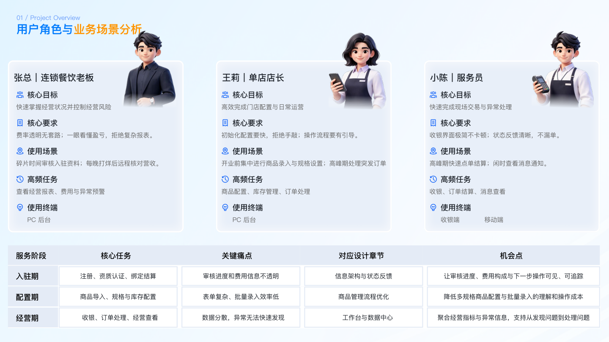
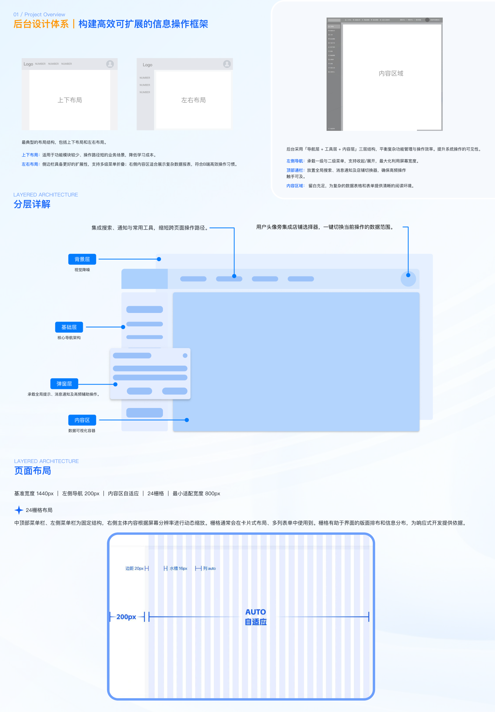
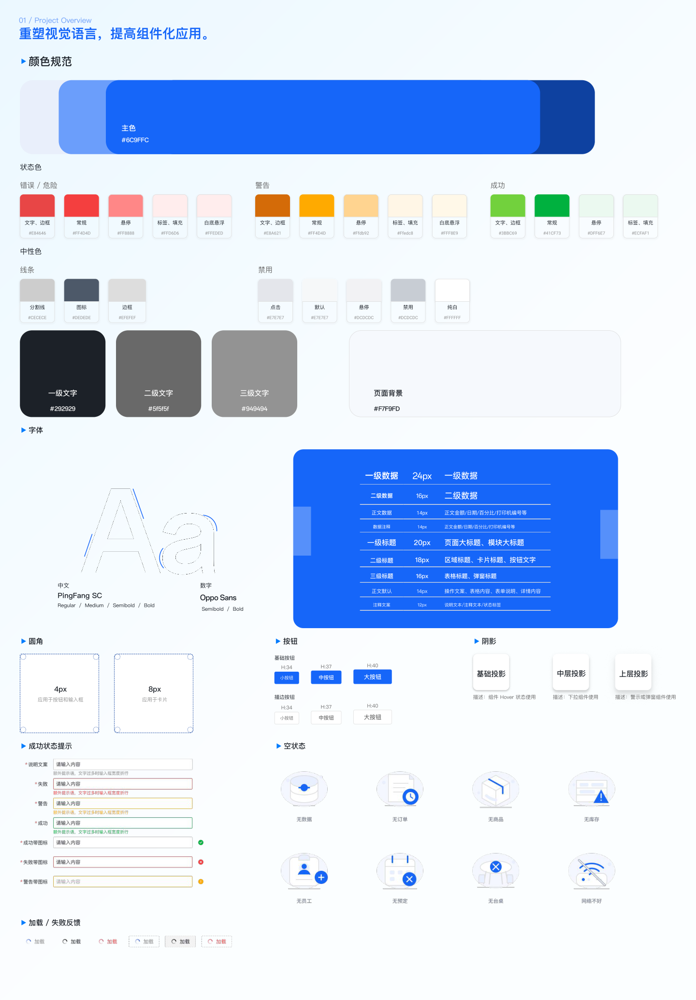
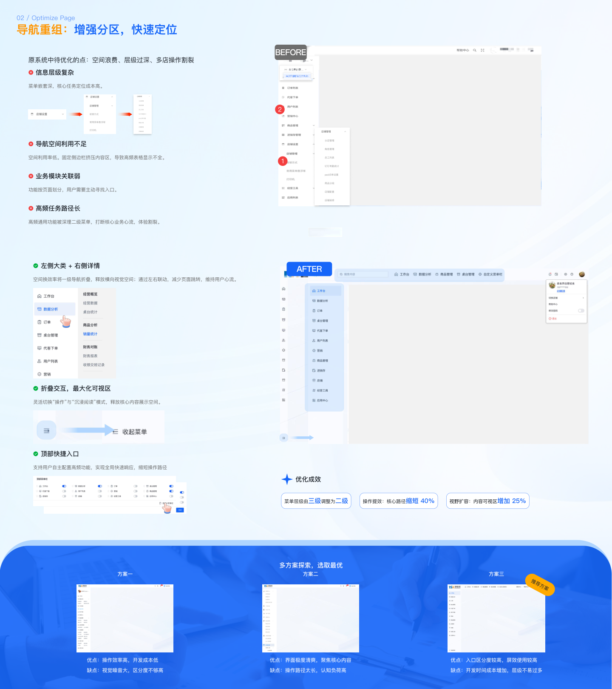
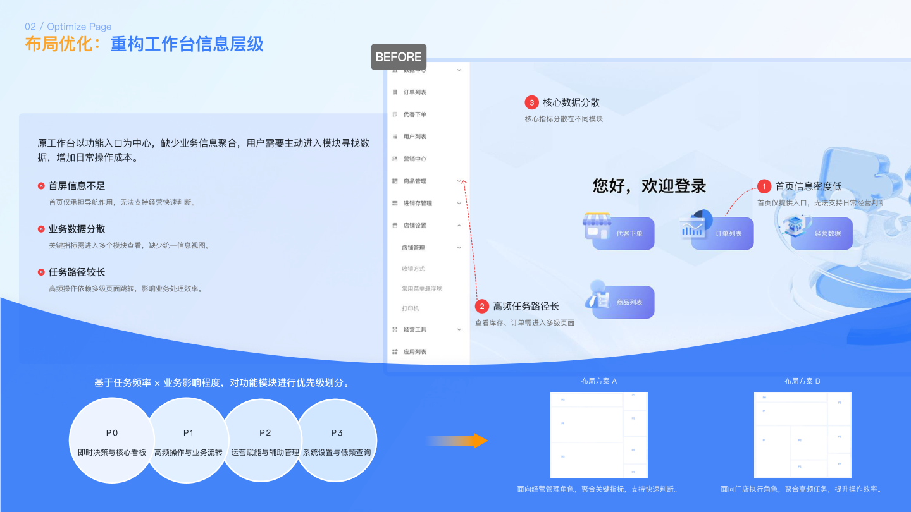
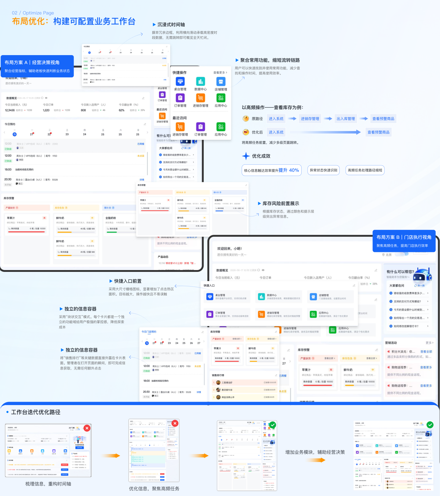
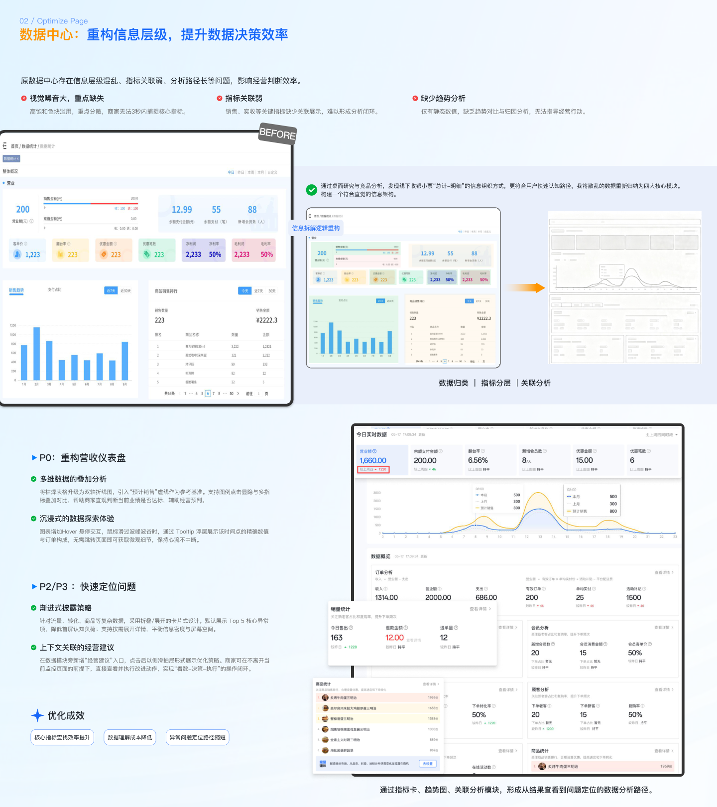
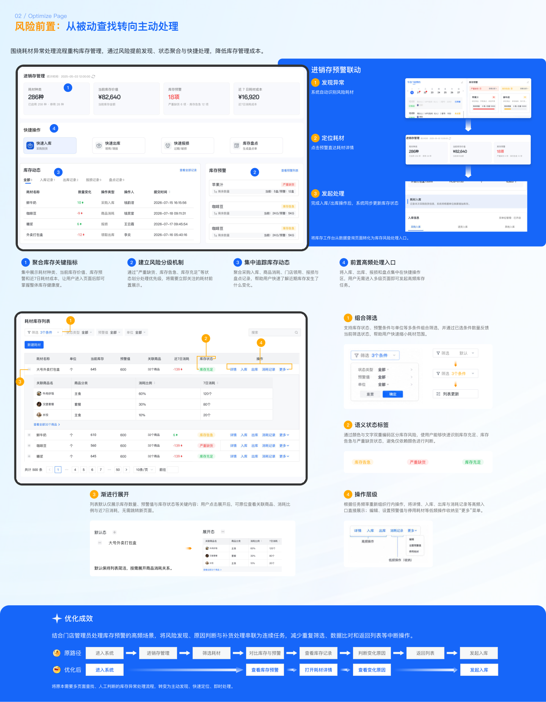
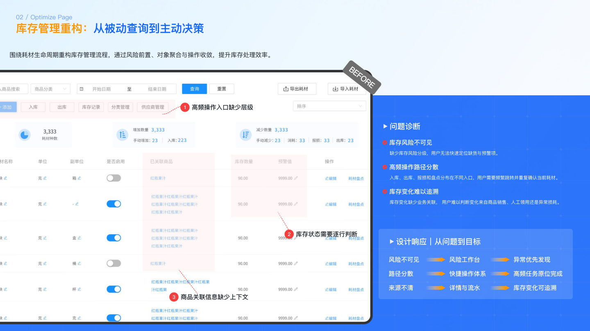
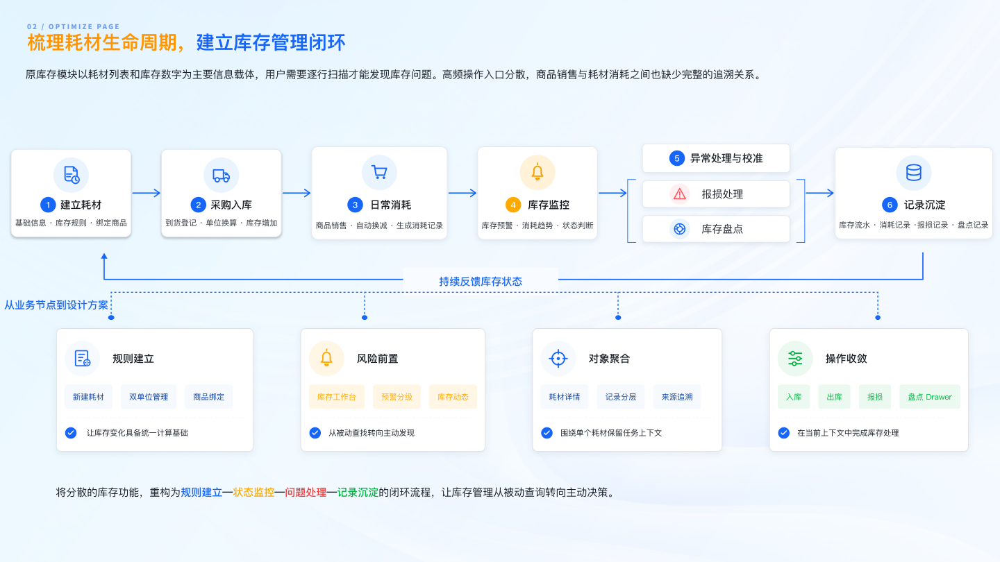

我是一名 B端 SaaS 产品设计师，目前专注于连锁门店经营场景的数字化产品设计。
我相信好的 B端产品设计，是让复杂的业务流程变得清晰、可预测、可扩展。在过往的项目中，我主导了后台基础框架的重构与 Design System 从 0 到 1 的建设，致力于将业务目标与用户体验深度结合，交付可落地、可度量的设计成果。
具备复杂业务场景分析能力，结合业务目标与用户需求，梳理产品流程、信息架构及功能逻辑，并转化为可落地的设计方案。
具备用户访谈、竞品分析及需求梳理经验，通过与实际用户沟通收集反馈，分析使用过程中的问题，持续优化产品体验。
拥有后台管理系统、多端产品设计经验，熟悉表单、数据展示、业务流程等复杂场景设计，关注降低用户操作成本和理解成本。
熟悉从需求分析、竞品研究、流程梳理、交互设计、UI设计到开发跟进及上线验证的完整设计流程。
具备 0→1 项目设计经验，参与产品规划、功能迭代及上线后的体验优化，根据真实用户反馈持续完善产品。
具备设计规范整理和组件库建设经验，提升产品设计一致性，提高团队协作效率。
原有后台系统存在六大核心问题：任务入口分散、关键操作缺少反馈、字段配置关系复杂、信息架构分散、交互反馈不足、业务扩展困难。
主导整个重构项目的 UX 设计，从业务调研、用户访谈、问题诊断，到信息架构设计、交互流程优化、视觉规范制定，全程负责。
以场景为中心重构信息架构：数据中心统领视图、导航以角色场景重新组织、库存管理提供场景化入口。SKU 创建流程从 3 层简化为 2 层。
建立完整的 Design System 配色规范，包含主色、辅助色、状态色与文字色体系。
※ 以上为项目 Design System 配色，与页面主题色不同





工作台是门店人员的日常操作入口。重构后将关键指标、快捷入口、待办事项集中展示，让用户一屏获取核心信息，减少页面切换。

数据中心承载核心数据查询需求。重构信息层级，让高频数据优先展示，同时支持多维度筛选与导出。

库存管理是门店最高频场景之一。优化字段配置流程，提供智能模板，减少用户配置成本，错误率从 88% 降至 40%。

商品模块重构 SKU 创建流程，将原来需要 3 层页面才能完成的操作简化为 2 层，创建耗时从 80 秒缩短至 40 秒。

以场景为中心重新组织导航结构，将原有零散的入口按「工作台 / 数据中心 / 库存 / 商品」四大场景重新分类，降低用户查找成本。

扫码添加微信